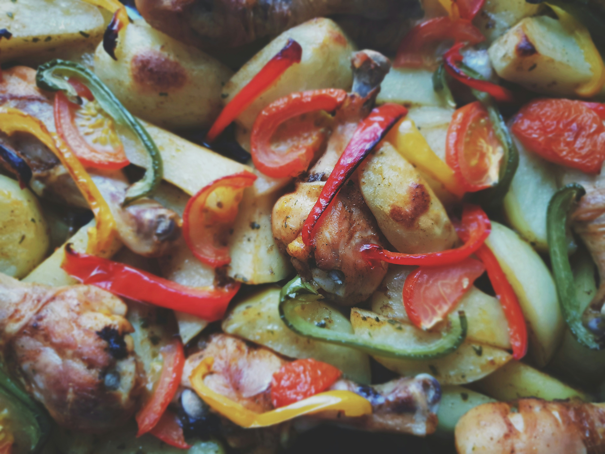

Home
Lemon Herb Chicken with Roasted Vegetables

h2>Description
This Lemon Herb Chicken with Roasted Vegetables is a flavorful and healthy dish
that's perfect for a weeknight dinner. The chicken is marinated in a zesty lemon
and herb mixture, then roasted to perfection alongside a medley of colorful vegetables.
It's a complete meal that's both satisfying and nutritious.
Ingredients
- 4 boneless, skinless chicken breasts
- 2 tablespoons olive oil
- 2 tablespoons fresh lemon juice
- 1 teaspoon lemon zest
- 2 cloves garlic, minced
- 1 teaspoon dried oregano
- 1 teaspoon dried thyme
- Salt and pepper to taste
- 1 cup baby carrots
- 1 cup broccoli florets
- 1 cup bell peppers, sliced
Instructions
- Preheat the oven to 400°F (200°C).
- In a small bowl, whisk together the olive oil, lemon juice, lemon zest, minced garlic, dried oregano, dried thyme, salt, and pepper.
- Place the chicken breasts in a resealable plastic bag or shallow dish and pour the marinade over them. Seal the bag or cover the dish and refrigerate for at least 30 minutes (or up to 2 hours) to allow the flavors to infuse.
- While the chicken is marinating, prepare the vegetables. In a large mixing bowl, toss the baby carrots, broccoli florets, and sliced bell peppers with a drizzle of olive oil, salt, and pepper.
- Transfer the marinated chicken breasts to a baking sheet lined with parchment paper or aluminum foil. Arrange the prepared vegetables around the chicken.
- Roast in the preheated oven for 25-30 minutes, or until the chicken reaches an internal temperature of 165°F (74°C) and the vegetables are tender and slightly caramelized.
- Remove from the oven and let rest for a few minutes before serving. Garnish with fresh herbs or lemon slices if desired.